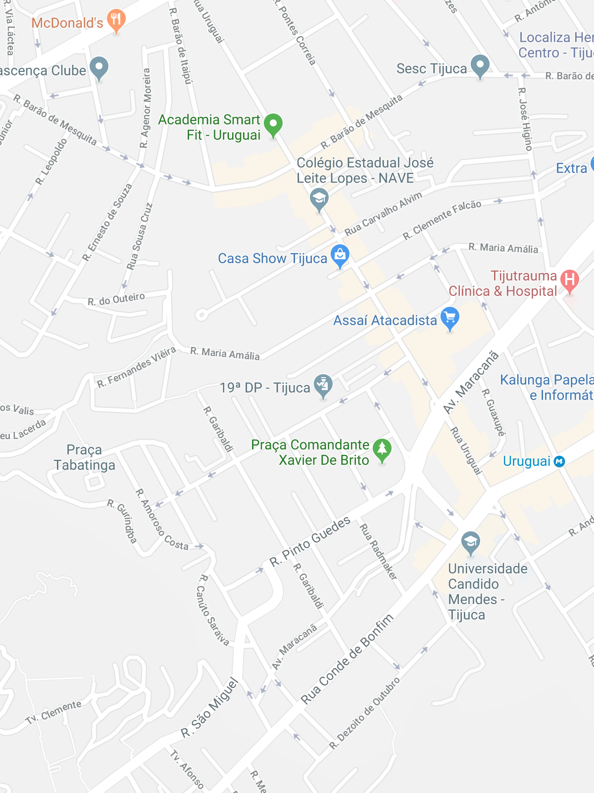

Animais Fantásticos


Raposa
As raposas são animais mamíferos e onívoros pertencentes à família Canidae. São vulpídeos de porte médio, caracterizados por um focinho comprido e uma cauda longa e peluda.
Também apresentam como particularidade suas pupilas ovais, semelhantes às pupilas verticais dos felídeos.
Esquilo
Os esquilos são animais mamíferos e onívoros pertencentes à família Sciuridae. São roedores de pequeno porte, caracterizados por seus dentes incisivos fortes e uma cauda longa e peluda.
Também apresentam como particularidade sua grande agilidade, sendo excelentes escaladores e capazes de saltar entre galhos com facilidade.
Urso
Os ursos são animais mamíferos pertencentes à família Ursidae. São animais de grande porte, caracterizados por seu corpo robusto, patas fortes e uma espessa camada de pelos.
Também apresentam como particularidade sua excelente capacidade de adaptação, podendo viver em diferentes ambientes e possuir uma alimentação bastante variada.
Lobo
Os lobos são animais mamíferos e carnívoros pertencentes à família Canidae. São animais de médio a grande porte, caracterizados por seu corpo atlético, focinho alongado e uma cauda peluda.
Também apresentam como particularidade seu comportamento social, vivendo frequentemente em grupos organizados chamados alcateias.
Macaco
Os macacos são animais mamíferos pertencentes à ordem dos primatas. Possuem diferentes tamanhos e características, mas geralmente apresentam membros adaptados para subir em árvores e grande capacidade de aprendizado.
Também apresentam como particularidade suas mãos habilidosas, que permitem segurar objetos e se movimentar com facilidade pelo ambiente.
Leão
Os leões são animais mamíferos e carnívoros pertencentes à família Felidae. São felinos de grande porte, caracterizados por seu corpo musculoso, patas fortes e, nos machos, uma grande juba ao redor da cabeça.
Também apresentam como particularidade seu comportamento social, vivendo em grupos chamados alcateias e sendo os únicos grandes felinos que possuem uma organização social tão marcada.
FAQ
- Qual a idade dos animais?
- A expectativa de vida varia bastante entre os animais. Esquilos costumam viver de 5 a 10 anos, lobos de 6 a 8 anos na natureza, leões de 10 a 14 anos, ursos de 20 a 30 anos e macacos podem viver de 15 a mais de 40 anos, dependendo da espécie.
- Eles são fantásticos?
- Sim! Esquilos, ursos, lobos, macacos e leões possuem características únicas e desempenham papéis importantes nos ecossistemas onde vivem.
- Qual a diferença?
- Esses animais pertencem a diferentes grupos e possuem características distintas. Esquilos são roedores, enquanto ursos, lobos e leões são mamíferos predadores. Já os macacos pertencem à ordem dos primatas.
- Como proteger?
- A melhor forma de proteger esses animais é preservar seus habitats naturais, combater a caça ilegal, evitar o desmatamento e apoiar iniciativas de conservação da fauna.
Contato

- Contato@origamid.com
- +55 (21) 9999-9999
- Rua do Conde, nº 21
- Rio de Janeiro - RJ